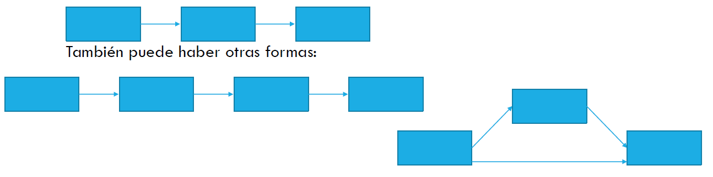

Introducción al Análisis de Senderos (Parte II)
Análisis Avanzado de Datos II
Gabriel Sotomayor
2025-06-23
Contenidos de esta Sesión
Análisis de Senderos (Parte II)
- Recordatorio de la sesión anterior: Conceptos básicos y supuestos del PA.
- Pasos de aplicación del PA:
- Especificación del modelo.
- Identificación del modelo.
- Estimación de parámetros.
- Evaluación del ajuste del modelo.
- Re-especificación del modelo (si es necesario).
- Interpretación de resultados.
- Aplicación Práctica de PA en R (con
lavaan).
1. Repaso de la Sesión Anterior: Fundamentos del PA
Conceptos Centrales del Análisis de Senderos (Repaso)
- Análisis de Senderos (PA): Técnica para evaluar el ajuste de modelos teóricos que proponen relaciones de dependencia (causales hipotetizadas) entre variables observadas. Es una extensión de la Regresión Lineal Múltiple (RLM).
- Variables Exógenas: Sus causas están fuera del modelo; explican a otras variables.
- Variables Endógenas: Sus causas están dentro del modelo; son explicadas por otras variables (pueden ser dependientes finales o mediadoras).
- Efectos Directos: Influencia inmediata de una variable X sobre una variable Y (X \(\longrightarrow\) Y).
- Efectos Indirectos: Influencia de X sobre Y que opera a través de una o más variables mediadoras (X \(\longrightarrow\) M \(\longrightarrow\) Y).
- Efectos Espurios: Parte de la correlación entre dos variables endógenas que se debe a una causa exógena común.
Supuestos Clave del Path Analysis (Repaso)
Recordemos los supuestos importantes que discutimos:
- Correcta Especificación del Modelo (basada en teoría).
- Exploración y Limpieza de Datos (outliers, missing values).
- Tamaño Muestral Adecuado (ej. ~10-20 casos/parámetro, N > 200).
- Independencia de los Errores (residuales de cada ecuación).
- Normalidad (de residuos/variables, especialmente para estimación ML).
- Linealidad y Aditividad de las relaciones.
- Baja Multicolinealidad entre predictores de una misma endógena.
- Recursividad (generalmente, modelos sin loops causales).
- Nivel de Medición (idealmente intervalar, o manejo adecuado de ordinales).
- Confiabilidad de las Medidas (variables observadas miden bien sus conceptos).
2. Pasos de Aplicación del Análisis de Senderos
Los 6 Pasos Fundamentales del Path Analysis
La aplicación rigurosa de un Análisis de Senderos sigue una secuencia lógica:
- Especificación del Modelo:
- Traducir la teoría en un diagrama de senderos y/o un sistema de ecuaciones. Definir qué variables se relacionan y en qué dirección.
- Identificación del Modelo:
- Asegurar que el modelo propuesto pueda ser estimado unívocamente con los datos disponibles. (¿Hay suficiente información para calcular todos los parámetros?).
- Estimación de Parámetros:
- Calcular los coeficientes path (fuerza de las relaciones), varianzas y covarianzas, usando un método de estimación apropiado (ej. Máxima Verosimilitud).
Los 6 Pasos Fundamentales del Path Analysis
- Evaluación del Ajuste del Modelo:
- Determinar qué tan bien el modelo teórico reproduce las relaciones (covarianzas/correlaciones) observadas en los datos empíricos, usando índices de bondad de ajuste.
- Re-especificación del Modelo (si es necesario):
- Si el ajuste es pobre, considerar modificaciones al modelo (añadir/quitar paths), siempre con justificación teórica.
- Interpretación de Resultados:
- Extraer conclusiones sobre las hipótesis, la magnitud y significancia de los efectos, y la validez general del modelo.
Paso 1: Especificación del Modelo
Este es el paso más crucial y guiado por la teoría.
- Base Teórica: Se parte de un conocimiento teórico sólido sobre el fenómeno social que se quiere modelar. ¿Qué dice la literatura previa? ¿Cuáles son las hipótesis causales?
- Selección de Variables: Elegir las variables observables relevantes que representan los conceptos teóricos.
- Definición de Relaciones: Establecer las direcciones de influencia (qué variable afecta a cuál) y qué relaciones se esperan (positivas, negativas).
- Errores de Especificación a Evitar:
- Interna: Omitir paths importantes que la teoría sugiere, o incluir paths irrelevantes sin sustento.
- Externa: Omitir variables exógenas cruciales que podrían explicar gran parte de la variación o generar relaciones espurias.
- Ejemplo: Si modelamos el rendimiento académico, la teoría podría sugerir que la autoeficacia (variable mediadora) es un camino importante entre el apoyo familiar (exógena) y el rendimiento (endógena final). Omitir la autoeficacia sería un error de especificación.
Paso 2: Identificación del Modelo
Un modelo debe ser identificado para que sus parámetros puedan ser estimados de forma única.
- Información Disponible vs. Parámetros a Estimar:
- La “información disponible” son las varianzas y covarianzas únicas entre las variables observadas en nuestros datos. Para p variables, hay \(p(p+1)/2\) de estas piezas de información.
- Los “parámetros a estimar” son todos los coeficientes path, las varianzas de las variables exógenas, las varianzas de los términos de error de las endógenas, y las covarianzas entre exógenas (si se modelan).
- Grados de Libertad (gl):
- \(gl = (\text{Nº de varianzas/covarianzas únicas}) - (\text{Nº de parámetros libres a estimar})\)
- Estados del Modelo:
- Sub-identificado (\(gl < 0\)): Hay más parámetros que información. Infinitas soluciones. No se puede estimar. Se necesita simplificar el modelo o añadir restricciones.
- Justo-identificado (\(gl = 0\)): Hay tantos parámetros como piezas de información. El modelo reproducirá perfectamente los datos (ajuste perfecto). No se puede testear la teoría, ya que no hay “espacio” para el error.
- Sobre-identificado (\(gl > 0\)): Hay más piezas de información que parámetros. Hay una solución única y el modelo puede ser testeado contra los datos. Este es el estado deseado.
Paso 3: Estimación de Parámetros
Una vez especificado e identificado el modelo, se estiman los parámetros.
- Objetivo: Encontrar los valores de los coeficientes path (y otras varianzas/covarianzas) que hagan que la matriz de covarianza implicada por el modelo (\(\Sigma(\theta)\)) sea lo más parecida posible a la matriz de covarianza observada en la muestra (S).
- Matriz Residual: \(S - \Sigma(\theta)\). Si el modelo ajusta bien, esta matriz debería tener valores cercanos a cero.
- Métodos de Estimación Comunes:
- Máxima Verosimilitud (Maximum Likelihood - ML): El más usado. Busca los valores de los parámetros que maximizan la probabilidad de haber observado los datos muestrales, asumiendo normalidad multivariante.
- Es robusto a desviaciones leves/moderadas de la normalidad, especialmente con muestras grandes.
- Mínimos Cuadrados Ponderados (Weighted Least Squares - WLS): Mejor para datos categóricos o con severa no normalidad, pero requiere muestras muy grandes.
- Mínimos Cuadrados Ponderados Diagonalmente (Diagonally Weighted Least Squares - DWLS) o WLSMV: Estimador robusto para variables categóricas/ordinales, funciona bien con muestras más pequeñas que WLS. (Este es a menudo el recomendado para datos Likert).
- Máxima Verosimilitud (Maximum Likelihood - ML): El más usado. Busca los valores de los parámetros que maximizan la probabilidad de haber observado los datos muestrales, asumiendo normalidad multivariante.
Paso 4: Evaluación del Ajuste del Modelo
¿Qué tan bien nuestro modelo teórico representa los datos empíricos? Usamos índices de bondad de ajuste.
- Lógica: Comparan la matriz de covarianza observada (S) con la matriz de covarianza que el modelo implica o reproduce (\(\hat{\Sigma}\) o \(\Sigma(\theta)\)).
- Se evalúa el ajuste en tres niveles:
- Ajuste Global del Modelo: ¿El modelo en su conjunto es consistente con los datos?
- Ajuste de Partes del Modelo: ¿Hay relaciones específicas mal representadas (residuos grandes)?
- Magnitud y Significancia de Parámetros: ¿Los coeficientes path son sustantivos y estadísticamente significativos? ¿La varianza explicada (\(R^2\)) de las endógenas es aceptable?
- Tipos de Índices de Ajuste Global:
- Absolutos: Evalúan el ajuste sin comparar con un modelo base (ej. \(\chi^2\), RMSEA, GFI, SRMR).
- Incrementales/Comparativos: Comparan el modelo propuesto con un modelo más restrictivo, usualmente el “modelo nulo” o de independencia (ej. CFI, TLI/NNFI, NFI).
- Parsimoniosos: Consideran el ajuste y la complejidad (número de parámetros) del modelo (ej. PNFI, AIC, BIC - útiles para comparar modelos no anidados).
Evaluación del Ajuste: Criterios Comunes
| Estadístico | Abreviatura | Criterio de Buen/Aceptable Ajuste |
|---|---|---|
| Ajuste Absoluto | ||
| Chi-cuadrado del Modelo | \(\chi^2\) | p-valor > 0.05 (No significativo) |
| Razón Chi-cuadrado / grados de libertad | \(\chi^2/gl\) | < 2-3 (Bueno), < 5 (Aceptable) |
| Índice de Bondad de Ajuste | GFI | \(\geq\) 0.95 (Bueno), \(\geq\) 0.90 (Aceptable) |
| Índice de Bondad de Ajuste Corregido | AGFI | \(\geq\) 0.90 (Bueno), \(\geq\) 0.85 (Aceptable) |
| Raíz del Residuo Cuadrático Medio | RMR | Pequeño, cercano a 0 (depende de escala) |
| Raíz del Residuo Cuadrático Medio Estandarizado | SRMR | \(\leq\) 0.08 (Bueno), \(\leq\) 0.10 (Aceptable) |
| Raíz Cuadrada Media del Error de Aproximación | RMSEA | \(\leq\) 0.05 (Bueno), \(\leq\) 0.08 (Aceptable) |
| (IC 90% del RMSEA) | (Límite superior < 0.08 - 0.10) | |
| Ajuste Comparativo/Incremental | ||
| Índice de Ajuste Comparativo | CFI | \(\geq\) 0.95 (Bueno), \(\geq\) 0.90 (Aceptable) |
| Índice de Tucker-Lewis (o NNFI) | TLI (NNFI) | \(\geq\) 0.95 (Bueno), \(\geq\) 0.90 (Aceptable) |
| Índice de Ajuste Normalizado | NFI | \(\geq\) 0.95 (Bueno), \(\geq\) 0.90 (Aceptable) |
| Ajuste Parsimonioso | ||
| Índice de Ajuste Normalizado Parsimonioso | PNFI | Valores más altos son mejores (comparando) |
| Criterio de Información de Akaike | AIC | Valores más bajos son mejores (comparando) |
| Criterio de Información Bayesiano | BIC | Valores más bajos son mejores (comparando) |
Paso 5: Re-especificación del Modelo
- Si el ajuste del modelo inicial no es satisfactorio, se puede considerar modificarlo (re-especificarlo).
- ¡ADVERTENCIA! La re-especificación debe estar fuertemente guiada por la teoría. No se deben añadir o quitar paths solo para “mejorar los números” si no tienen sentido conceptual. Hacerlo puede llevar a modelos que ajustan bien a la muestra particular por azar, pero no generalizan (sobreajuste).
- Herramientas para guiar la re-especificación (con cautela):
- Índices de Modificación (IM): Sugieren qué parámetro, si se liberara (se estimara en lugar de estar fijo en cero), produciría la mayor reducción en el \(\chi^2\) del modelo. Un IM > 3.84 (para 1 gl) indica que el cambio sería estadísticamente significativo.
- Residuos Estandarizados: Diferencias grandes (>|2.58|) entre las covarianzas observadas y las reproducidas por el modelo para pares específicos de variables pueden indicar paths omitidos o problemas locales.
- Cualquier modelo re-especificado es, en parte, exploratorio y debería, idealmente, ser validado en una nueva muestra independiente.
Paso 6: Interpretación de Resultados
Si el modelo tiene un ajuste aceptable, se procede a la interpretación sustantiva:
- Coeficientes Path Estandarizados:
- Magnitud: ¿Cuán fuerte es el efecto directo? (Pequeño ~0.1, Mediano ~0.3, Grande ~0.5 o más - reglas de Cohen, pero dependen del contexto).
- Dirección: ¿Positivo o negativo, según lo esperado por la teoría?
- Significancia Estadística: ¿El p-valor es < 0.05? ¿El intervalo de confianza del coeficiente no estandarizado excluye el cero?
- Efectos Indirectos y Totales:
- Calcular (o solicitar al software) los efectos indirectos significativos y el efecto total.
- ¿Cuáles son las principales vías de influencia? ¿Hay mediación completa o parcial?
- Varianza Explicada (\(R^2\)):
- ¿Qué proporción de la varianza de cada variable endógena es explicada por sus predictores en el modelo?
- Conclusiones Teóricas:
- ¿Se confirman o refutan las hipótesis originales?
- ¿Qué aporta el modelo a la comprensión del fenómeno?
- ¿Cuáles son las limitaciones del modelo?
Interpretación de Coeficientes Path (Recordatorio)
Los coeficientes path estandarizados indican el cambio en desviaciones estándar en la variable endógena por cada cambio de una desviación estándar en la variable predictora, controlando por otras variables que influyen directamente en esa misma endógena.
Ejemplo 1:
castigo_media ~ rwa_media (Beta = 0.284, p < 0.001):- Por cada aumento de una DE en “autoritarismo de derechas” (rwa_media), se espera que el “castigo severo” (castigo_media) aumente en promedio 0.284 DE, controlando por otras variables que predicen
castigo_media.
- Por cada aumento de una DE en “autoritarismo de derechas” (rwa_media), se espera que el “castigo severo” (castigo_media) aumente en promedio 0.284 DE, controlando por otras variables que predicen
Ejemplo 2:
rwa_media ~ izquierda (Beta = -0.35, p < 0.001): (izquierda es dummy 1=Sí, 0=Independiente)- En promedio, ser de izquierdas (comparado con ser independiente) se asocia con una disminución de 0.35 DE en “autoritarismo de derechas”, controlando por otras variables.
Componentes Clave de la Interpretación: Tamaño, Dirección, Control Estadístico, Efecto Promedio, Significancia.
Inferencia en Análisis de Senderos (Salida lavaan)
lavaan proporciona la información para la inferencia:
## Regressions:
## Estimate Std.Err z-value P(>|z|) Std.lv Std.all
## castigo_media ~
## rwa_media 0.284 0.018 15.941 0.000 0.284 0.283
## rwa_media ~
## derecha 0.182 0.047 3.856 0.000 0.182 0.074
## izquierda -0.404 0.042 -9.679 0.000 -0.404 -0.187
## centro -0.094 0.033 -2.833 0.005 -0.094 -0.056- Estimate: Coeficientes no estandarizados.
- Std.Err: Error estándar del coeficiente no estandarizado.
- z-value:
Estimate / Std.Err. - P(>|z|): p-valor para \(H_0: \beta = 0\).
- Std.lv: Coeficientes con variables latentes estandarizadas (si las hubiera), VOs en su escala.
- Std.all: Coeficientes path totalmente estandarizados (Betas). Estos son los que usualmente se interpretan para magnitud relativa y se muestran en diagramas.
Aquí, todos los paths mostrados son estadísticamente significativos (P(>|z|) < 0.05).
3. Aplicación Práctica de PA en R con lavaan
Actividad 2: Pensando en Efectos Indirectos
En grupos de 2 o 3 personas:
- Piensen en al menos tres ejemplos de relaciones mediadas (efectos indirectos) que podrían ser relevantes en la investigación sociológica.
- Para cada ejemplo, identifiquen claramente:
- Una variable independiente (X)
- Una variable mediadora (M)
- Una variable dependiente (Y)
- Redacten una hipótesis clara para cada relación indirecta que propongan (es decir, cómo X afecta a Y a través de M).
- Dibujen un diagrama de senderos simple para cada uno de sus ejemplos, mostrando las variables y las flechas.
Recordatorio de estructuras posibles de mediación:

(Pueden existir variaciones o modelos más complejos, pero estos son los básicos).Sintaxis Básica de lavaan para Modelos de Senderos
Para especificar modelos en lavaan, usamos un lenguaje de fórmulas dentro de un string de texto.
| Sintaxis | Operador lavaan |
Descripción | Ejemplo en lavaan |
|---|---|---|---|
| \(\rightarrow\) | ~ |
Regresión: Y es predicha por X1, X2 | Y ~ X1 + X2 |
| \(\leftrightarrow\) | ~~ |
(Co)varianza: | |
| Varianza de X1 | X1 ~~ X1 (o lavaan la estima por defecto) |
||
| Covarianza entre X1 y X2 (exógenas) | X1 ~~ X2 |
||
| Covarianza entre errores de Y1 e Y2 (endógenas) | Y1 ~~ Y2 (¡OJO! Esto es covarianza de RESIDUOS) |
||
| Definir | := |
Parámetro Definido: Calcular efecto indirecto | ef_ind := a*b (si a y b son paths etiquetados) |
| Etiqueta | etiqueta* |
Etiquetar un Parámetro: | Y ~ b1*X1 + b2*X2 (etiqueta paths como b1 y b2) |
| Fijar | valor* |
Fijar un Parámetro: | Y ~ 0.5*X1 (fija el path de X1 a Y en 0.5) |
Ejemplo Práctico: Sintaxis lavaan
Modelo: Ingresos (ing) afectan la Contratación de Trabajo Doméstico (ctd), y ctd afecta las Horas de Trabajo Doméstico Propias (htd).
# Especificación del modelo en lavaan
modelo_ejemplo_lavaan <- '
# Senderos (Regresiones)
ctd ~ ing # Ingresos predicen Contratación TD
htd ~ ctd # Contratación TD predice Horas TD
# Opcional: Si quisiéramos el efecto directo de ing sobre htd
# htd ~ ing
'Recordatorio Clave: En lavaan, cada variable endógena (que recibe al menos una flecha) define una nueva línea de ecuación en la especificación del modelo (usando ~).
Ejercicio 3: Especificando Modelos en lavaan
- Retomen los diagramas que crearon en la Actividad 1 (los tres escenarios teóricos).
- Para cada uno de esos diagramas, escriban la especificación del modelo correspondiente utilizando la sintaxis de
lavaan.
Recordatorio de Sintaxis lavaan:
| Sintaxis | Operador | Descripción |
|---|---|---|
~ |
Regresión (VD ~ VI1 + VI2…) | |
~~ |
(Co)Varianza | |
:= |
Parámetro Definido (ej. efectos indirectos) | |
* |
Etiquetar o Fijar parámetro |